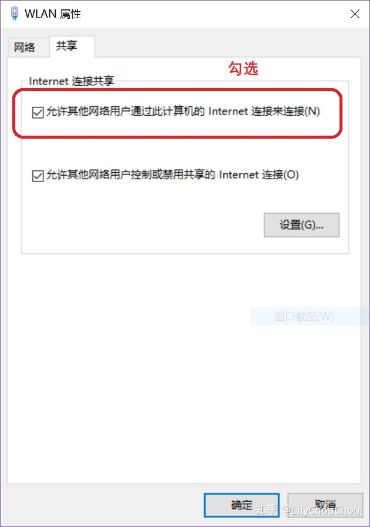
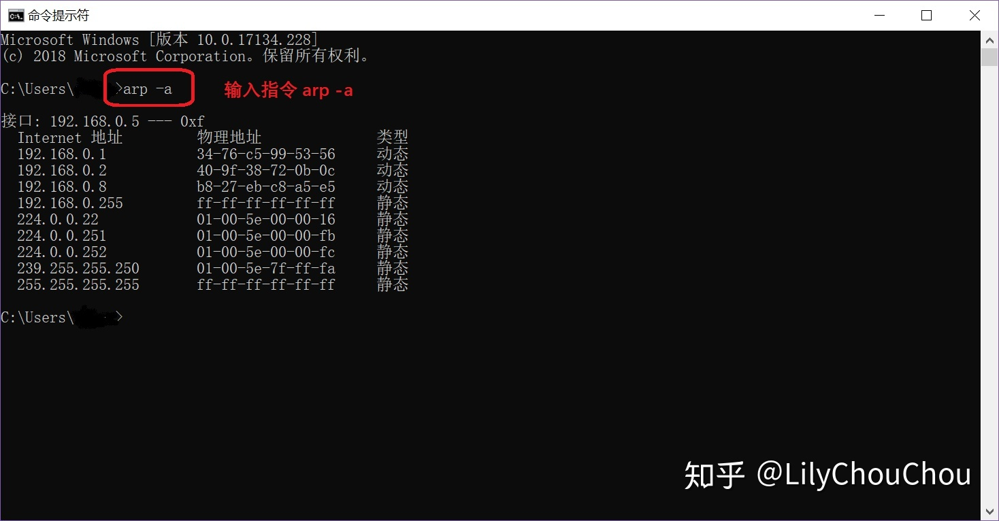
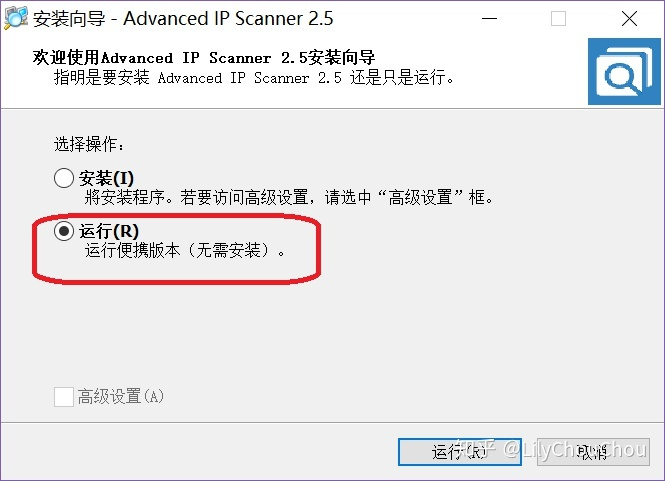
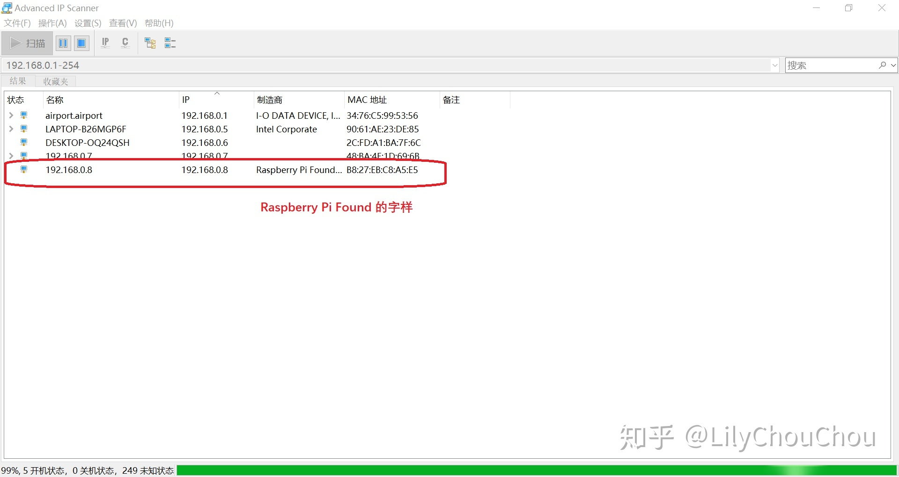
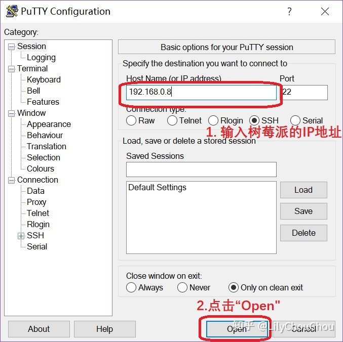
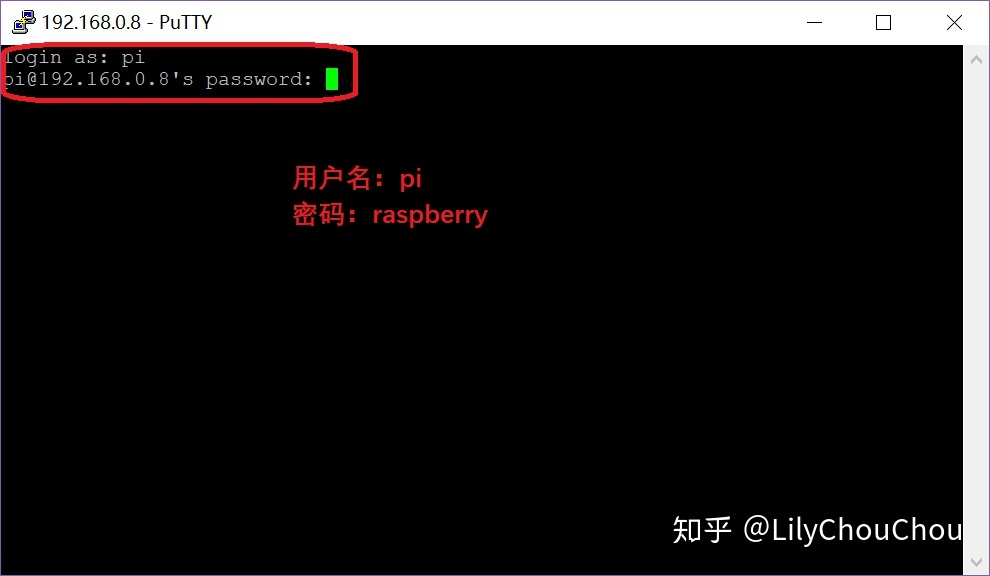
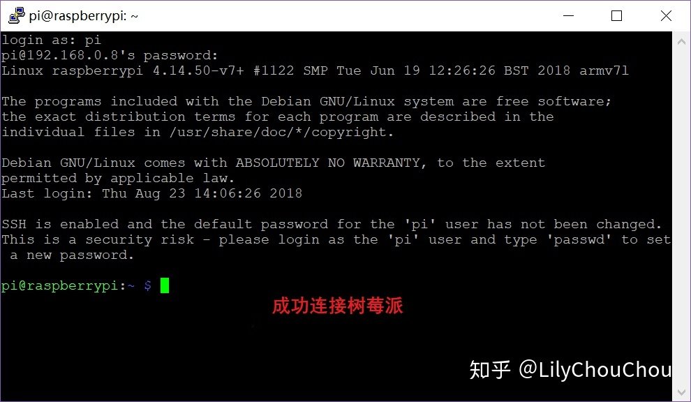
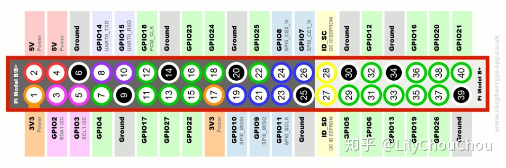
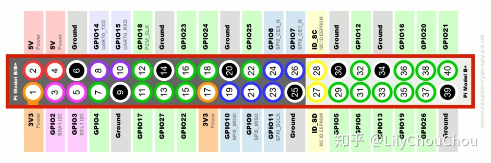
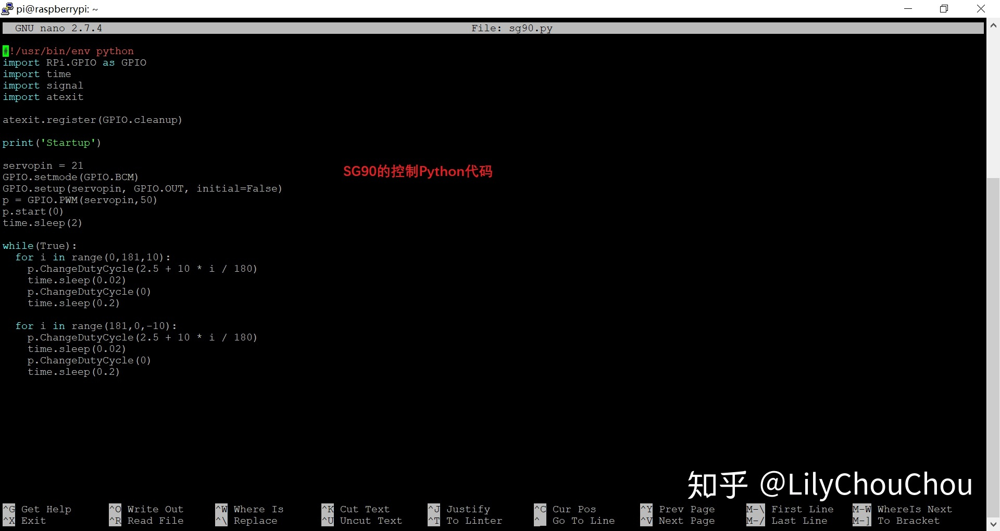

无线Wi-Fi下玩转树莓派+SG90舵机+Python
这篇文章主要详细介绍了如何Wi-Fi连接树莓派并用Python和树莓派来控制SG90舵机。和之前《从零开始利用AWS来快速搭建WordPresspi平台》的文章所提到一样，百度一下题目中三个关键词，“树莓派”，“SG90”，“Python”,”Wi-Fi“你会发现很多相关教程和经验。
但是，很多资料全是复制，粘贴，不免会起到误导作用，而且还浪费大量的时间。
前期准备工作 1. 树莓派3B+：带供电系统和烧好树莓派官方Raspbian系统的SD卡 2. 一根网线：直连，普通网线即可 3. 无线路由器：普通家用即可 4. 笔记本电脑：双网卡（市场主流配置） 5. Tower Pro SG90舵机级双轴支架：淘宝有卖，便宜，请自行淘宝网检索 6. 杜邦线：连接舵机和树莓派3B+ 7. Putty软件：windows系统下,使用Putty来连接树莓派3B+, 可在Putty官网下载相应的版本并安装，这里以64位的windows版本为例 8. 局域网IP扫描软件Advanced_IP_Scanner_2.5.3646：备用，下载地址请自行百度，比较好找的资源
本文主要分两部分来完成用Python和树莓派控制SG90舵机
第一部分 Wi-Fi+网线+Putty软件直连直连树莓派3B+
这里采用网线+Putty软件直连树莓派3B+，这样可以节省经费，用最少的工具控制树莓派（当然也可以买HDMI高清屏，获或者连接外置显示器，本文不采取此种方式）
操作步骤：
1. 使树莓派3B+接好供电线，供电开机。
2. 将网线一端接到树莓派3B+，另一端接到路由器端口，然后笔记本连上无线Wi-Fi即。
3. 打开笔记本，找到无线网络连接右键“属性”，在共享选项卡上选中“允许其他网络用户通过此计算机的Internet连接来连接（N）”选项，点击确定。如下图所示：

4. 查找树莓派3B+的IP地址，首先，打开window系统下命令提示符窗口（快捷键WIN+R后输入cmd），并输入arp -a查看网络接口信息，如下图所示：

这里列出了所有的网络接口信息，但并不太清楚，路由器给树莓派分配哪个IP地址，因此这里采用网段扫描工具Advanced IP Scanner，自动扫描局域网网段内的主机IP地址。此扫描工具可以使用 免安装功能，如下图所示:

打开软件后，自动扫描可以发现“Raspberry Pi Found”的字样，所显示的IP地址就是树莓派的IP地址。

5. 在笔记本上，打开Putty远程登陆工具，输入步骤4中的树莓派IP地址，并点击”Open”按钮

6. 弹出如下界面，输入树莓派的默认用户名：pi，密码：raspberry

7. 完成上述6步后，即可对树莓派进行远程控制了

第二部分 Python+树莓派控制SG90舵机
此部分主要介绍如何使用Python和树莓派来控制SG90舵机
1. 首先认识一下Tower Pro SG90舵机
 它有三根接线，红线接5v电源，棕线接GROUND, 橙黄线为数据控制线，该线接到GPIO上，这里使用BCM模式下的21引脚
SG90 脉冲周期为20ms,脉宽0.5ms-2.5ms对应的角度-90到+90，对应的占空比为2.5%-12.5%。
2. 接下来，认识一下树莓派3B+的GPIO port,如下图：

3. 安装Python库和GPIO库, 依次执行以下命令
(1) 安装python库
它有三根接线，红线接5v电源，棕线接GROUND, 橙黄线为数据控制线，该线接到GPIO上，这里使用BCM模式下的21引脚
SG90 脉冲周期为20ms,脉宽0.5ms-2.5ms对应的角度-90到+90，对应的占空比为2.5%-12.5%。
2. 接下来，认识一下树莓派3B+的GPIO port,如下图：

3. 安装Python库和GPIO库, 依次执行以下命令
(1) 安装python库
sudo apt-get install python-dev
(2) 执行更新
sudo easy_install -U distribute
(3) 安装python-pip
sudo apt-get install python-pip
(4) 安装python-pip
sudo pip install rpi.gpio
然后基于Python进行编程， 编写SG90舵机的控制程序”sg90.py” (1) 执行 cd ~ (2) 执行 sudo mkdir SG90 (3) 执行 cd SG90 (4) 执行 sudo nano sg90.py (5) 复制以下代码，并按快捷键ctl+x ，选择Y保存退出  (6) 最后输入指令 sudo python sg90.py，运行控制程序
具体程序代码
#!/usr/bin/env python
import RPi.GPIO as GPIO
import time
import signal
import atexit
atexit.register(GPIO.cleanup)
servopin = 21
GPIO.setmode(GPIO.BCM)
GPIO.setup(servopin, GPIO.OUT, initial=False)
p = GPIO.PWM(servopin,50) #50HZ
p.start(0)
time.sleep(2)
while(True):
for i in range(0,181,10):
p.ChangeDutyCycle(2.5 + 10 * i / 180) #设置转动角度
time.sleep(0.02) #等该20ms周期结束
p.ChangeDutyCycle(0) #归零信号
time.sleep(0.2)
for i in range(181,0,-10):
p.ChangeDutyCycle(2.5 + 10 * i / 180)
time.sleep(0.02)
p.ChangeDutyCycle(0)
time.sleep(0.2)
最后，程序执行后，可以看到舵机不停的从０度转到180度，再转回来到０度，效果如下
参考来源 无显示器通过网线连接笔记本电脑玩转树莓派 树莓派+一根网线直连笔记本电脑 | 树莓派实验室 树莓派控制SG90舵机 - CSDN博客 Raspberry Pi 3 - GPIO-PWM-Servo-Using SG90 树莓派使用python 控制G90舵机
您也可以请我喝一杯咖啡,支持我的创作~ 比特币（BTC）:1FLHDgSp76u3CoasTF7fDyYBooGv8Frh5f 比特币现金（BCH）:1FLHDgSp76u3CoasTF7fDyYBooGv8Frh5f Ethereum (ETH): 0x5061c5ddeb4f82e3070a4bd593d2b1cc90d1bfc4